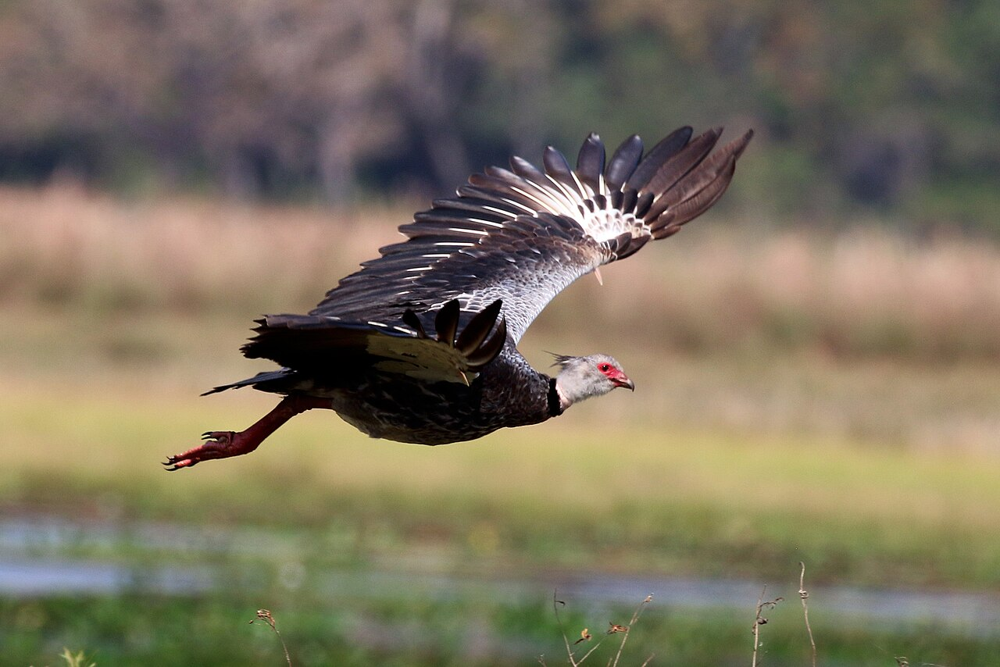

Lula.
diario de la mañana — el mundo, tu ciudad y lo que te asombra
Buen día, Lula. Vuelta a la rutina después del finde largo, con 19° / 30°, nublado y sin lluvia. La ciencia de hoy es de las que te van a servir para toda la carrera: le miraron el interior al poro nuclear en células vivas y resultó que adentro hay algo parecido a un líquido, no a una malla. Y hoy, hace 167 años, se publicaba El origen de las especies.
- El mundo en cinco minutos3'
- Argentina y Buenos Aires2'
- Ciencia: adentro del poro nuclear5'
- Mirá a tu alrededor2'
- Receta de estación2'
- La palabra del día1'
- Le français du matin2'
- English corner3'
- Martes de moda: la alpargata4'
- Hoy en la historia · un lugar2'
- Lo que me asombra hoy1'
- Pasatiempo: sudoku fácil10'
- Cuaderno: repaso, quiz y escritura4'
Bélgica se paralizó entera, y el primer ministro puso fecha de vencimiento a su propio gobierno
Ayer los tres grandes sindicatos belgas hicieron una huelga general contra el plan de ajuste del gobierno. Paró el transporte, pararon las escuelas y, como adhirieron los controladores aéreos, se cerró el espacio aéreo: la mayoría de los vuelos quedaron cancelados desde el día anterior. En Bruselas marcharon 70.000 personas según los organizadores y 50.000 según la policía —esa brecha es habitual y conviene dar siempre los dos números—. El reclamo central son los recortes, sobre todo en salud.
Y el mismo día, el primer ministro Bart De Wever le puso un plazo a su propia coalición: si en las próximas semanas no cierran un acuerdo sobre cómo recortar 10.000 millones de euros en tres años, deja caer el gobierno el 1 de enero. No es una amenaza vacía: el 2 de noviembre ya había presentado la renuncia y el rey Felipe se la rechazó, dándole más tiempo. La coalición son cinco partidos con 82 diputados sobre 76 necesarios; seis bancas de margen.
Por qué mirarlo desde acá
Es el mismo debate que acá, con otros números: un gobierno que quiere consolidar las cuentas, una coalición que no acuerda dónde cortar, y sindicatos capaces de parar el país. Lo distinto es el mecanismo: en Bélgica la renuncia del primer ministro se presenta ante el rey, que puede aceptarla o no, y ese rechazo es parte de la negociación. Una monarquía parlamentaria tiene esa válvula; un presidencialismo como el nuestro, no.
También ayer: Ucrania reconoció por primera vez, por boca de Zelenski, haber atacado con drones dos buques rusos frente a las costas de Libia —el gobierno paralelo libio pidió una investigación internacional al Consejo de Seguridad—, y la Unión Europea investiga un ciberataque en curso del que sospecha de hackers chinos.
El agro vendió 14,2 % más, con un dólar que se queda corto
El dato de ayer: las exportaciones agroindustriales crecieron 14,2 % en lo que va del año, y se estima que la exportación de granos aporte unos 6.000 millones de dólares hasta fin de año. El reparo que ponen los analistas es sobre el tipo de cambio real, que está alrededor de un 3 % por debajo del promedio de 2025: en castellano, el peso está algo más caro en términos reales que el año pasado, lo que le quita competitividad a lo que se exporta y abarata lo importado.
Para ubicar el año completo: el REM del Banco Central —la encuesta a consultoras que publica el BCRA todos los meses— proyecta un crecimiento del PBI de apenas 0,7 % para 2026, y la inflación de octubre fue 2,2 %. En el Congreso, el oficialismo consiguió dictamen de mayoría en Diputados para el Presupuesto 2027.
Le miraron el interior al poro nuclear, y adentro hay algo parecido a un líquido
Salió en Nature el 11 de noviembre: «Glycosylation and importins liquefy the FG barrier in live nuclear pores», de Miao Yu y colaboradores, con Gerhard Hummer (Max Planck de Biofísica) y Edward Lemke (Universidad de Maguncia) como autores de referencia. DOI: 10.1038/s41586-026-11258-0. Es un trabajo sobre la estructura más rara de la célula, y la que mejor resume el problema de cómo una célula decide qué entra y qué no.
El anclaje: qué es el poro nuclear y por qué es un problema
El complejo del poro nuclear (NPC) es el túnel que atraviesa la doble membrana del núcleo. Es la máquina proteica más grande de la célula —unas 1.000 proteínas, alrededor de 30 tipos distintos de nucleoporinas— y cada núcleo humano tiene del orden de 2.000 de estos poros. Por ahí pasa todo: los ARN mensajeros que salen, los ribosomas que se ensamblan, los factores de transcripción que entran.
El problema es el filtro. Las moléculas chicas (menos de unos 40 kDa) difunden libremente, pero las grandes solo pasan si vienen con una importina —una proteína transportadora que reconoce una «señal de localización nuclear» en la carga y la escolta—. ¿Quién hace de filtro? Un grupo de nucleoporinas llamadas FG-nucleoporinas, que tienen regiones intrínsecamente desordenadas: tramos de proteína que no se pliegan en una forma fija, sino que se mueven como fideos, y que están salpicados de repeticiones del par de aminoácidos fenilalanina-glicina (F y G, de ahí «FG»). Esas FG se pegan entre sí y llenan el centro del poro con una maraña.
La pregunta abierta hace veinte años era qué estado físico tiene esa maraña: ¿un gel casi sólido, con huecos por donde se cuela lo chico, o algo fluido? No se podía saber, porque los experimentos se hacían con nucleoporinas purificadas en el tubo, fuera de la célula.
Qué hicieron
Le pegaron colorantes fluorescentes a las nucleoporinas dentro de células vivas y midieron cuán rápido se movían. Se mueven rapidísimo: eso solo es compatible con un interior fluido, no con un gel rígido. Y encontraron dos cosas que lo licúan todavía más —el verbo del título—: la glicosilación de las propias nucleoporinas (en concreto el agregado de azúcares tipo O-GlcNAc, una modificación química que ya se sabía que estas proteínas tienen en cantidad) y la presencia de las importinas. O sea: el transportador no solo trae la carga, también ablanda la barrera que tiene que cruzar.
La otra mitad del trabajo son simulaciones de dinámica molecular, corridas en JUPITER, la primera supercomputadora exaescala de Europa, en Jülich. Y dan un resultado contraintuitivo: la ruta principal del transporte no pasa por el centro del poro, sino pegada al borde, por la periferia del canal.
Cómo leerlo con criterio
Dos cautelas. Una: «fluido» acá es una conclusión indirecta, inferida de la velocidad de los colorantes; el colorante informa sobre su propio entorno, y pegar una molécula a una proteína siempre puede perturbarla un poco. Dos: las simulaciones son un modelo, con su campo de fuerzas y sus supuestos, y lo que muestran es qué pasa si el sistema es como se lo modeló. Que experimento y simulación coincidan es lo que le da fuerza al trabajo, pero son dos tipos de evidencia distintos y conviene no sumarlos como si fueran lo mismo.
Biotec argentina · INGEBI, Buenos Aires
El instituto argentino donde la biología molecular se hace así —proteínas, cromatina, ingeniería genética— es el INGEBI, Instituto de Investigaciones en Ingeniería Genética y Biología Molecular «Dr. Héctor N. Torres», del CONICET, en la Ciudad. Nació de un programa de biología molecular del CONICET de 1980 y funciona como instituto desde 1983, bajo la dirección de Héctor Torres, uno de los que armaron el área en el país. Sus líneas dan una idea del rango: biología molecular del Chagas y cromatina de tripanosomátidos, fisiología y genética de la audición, ingeniería genética de plantas (papa, tolerancia a patógenos, transducción de señales lumínicas) y bases moleculares de las tauopatías, el grupo de enfermedades neurodegenerativas donde se agrega la proteína tau. Tiene abierto un concurso 2026 para incorporar grupos nuevos.
El ginkgo, que no tiene parientes vivos, y el chajá
El árbol: ginkgo
Ginkgo biloba. En Buenos Aires no abunda, pero hay —en Palermo, en Plaza San Martín, en patios de casas viejas— y vale la pena reconocerlo, porque es un caso único. Es el último sobreviviente de todo un grupo de plantas: la división Ginkgophyta tenía muchas especies en el Jurásico y hoy le queda esta sola, sin un solo pariente cercano vivo. Lo que ves es, literalmente, una rama del árbol de la vida que quedó con una sola hoja.
Y la hoja es inconfundible: un abanico partido al medio (de ahí biloba), con las nervaduras dicotómicas, es decir que se van bifurcando en Y sin volver a unirse nunca, un patrón arcaico que casi ninguna planta moderna conserva. Es una gimnosperma, como el pino: no tiene flores ni frutos. Lo que parece un carozo amarillo es un óvulo con una cubierta carnosa —y si pisás uno en otoño vas a entender por qué en las ciudades se plantan solo árboles machos: esa cubierta tiene ácido butanoico, el mismo de la manteca rancia y del olor a vómito—. El ginkgo es dioico: hay pies macho y pies hembra, separados.
Ahora, en noviembre, está verde y pleno. El espectáculo es en otoño, cuando toda la copa se pone amarillo intenso y, muy típico, se cae casi entera en dos o tres días.
El ave: chajá

Chauna torquata. Grandote, gris, con un collar negro y la cara roja. Si fuiste a la Reserva Ecológica lo viste o lo escuchaste: el grito —«cha-já»— se oye a un par de kilómetros y le da el nombre. Parece una especie de ganso, pero no lo es del todo: los chajás son Anhimidae, una familia de solo tres especies, emparentada con patos y cisnes pero separada desde hace muchísimo.
Tiene dos rarezas anatómicas lindas. Una: debajo de la piel tiene sacos aéreos subcutáneos, burbujas conectadas al sistema respiratorio, y si apoyás la mano se oye un crepitar; eso lo hace livianísimo y buen volador, aunque parezca pesado. Dos: en cada ala, en el codo, tiene dos espolones óseos que usa para pelear, y que se le rompen y le vuelven a crecer. Come plantas, anida en el agua y, cuando algo se acerca, es el primero del humedal en avisar: por eso los paisanos lo llaman el centinela.
Ceviche de merluza
Para dos. 400 g de filete de merluza bien fresco y sin espinas, el jugo de 6 u 8 limones, media cebolla morada en pluma finita, un ají (o medio, según cómo pique), cilantro, sal gruesa, y de acompañamiento batata hervida o choclo.
Cortá el pescado en cubos de 1,5 cm, parejos. Salalo y dejalo cinco minutos. Mientras, poné la cebolla en agua con hielo diez minutos y escurrila. Exprimí los limones sin apretar la cáscara. Mezclá el pescado con el jugo, el ají y la sal, esperá diez a quince minutos —no más—, agregá la cebolla y el cilantro picado, y comelo enseguida.
La química de la receta
Qué hace el limón: lo mismo que el calor, por otro camino. Cocinar es desnaturalizar: desarmar la estructura tridimensional de las proteínas del músculo sin tocar la cadena de aminoácidos. El calor lo hace agitándolas; el ácido lo hace bajando el pH, lo que cambia la carga eléctrica de los grupos ionizables y rompe los puentes que sostenían el plegado. Al pH del jugo de limón (alrededor de 2,2) las proteínas pasan su punto isoeléctrico, se desnaturalizan, se agregan entre sí y la carne se vuelve opaca y firme. Idéntico aspecto que cocida, sin una caloría de calor.
Por qué quince minutos y no dos horas: porque después de desnaturalizar sigue el paso siguiente. El ácido también activa las proteasas propias del pescado y favorece la agregación, y el músculo se va poniendo gomoso y seco, igual que un pescado pasado de horno. Los quince minutos son el punto donde está cocido por fuera y todavía tierno adentro.
Por qué la cebolla en agua helada: al cortarla, la aliinasa genera los compuestos azufrados que pican y repiten; el agua fría los arrastra —son solubles— y frena la enzima.
Una advertencia real: el ácido no mata parásitos. El Anisakis, un nematodo frecuente en pescado de mar, se inactiva con congelación (a −20 °C, 24 a 48 h) o con cocción de verdad, no con limón. Si vas a hacer ceviche, usá pescado que haya estado congelado, o compralo donde te lo garanticen.
poro sustantivo
griego póros (pasaje, vado, camino por el agua) → latín porus → castellano poro · inglés pore
En griego, póros no era un agujero: era un paso, el vado por donde se cruza un río. La idea no es el vacío sino la vía. Por eso la palabra resultó tan cómoda para la biología: un poro no es donde falta materia, es por donde se pasa, y eso es exactamente lo que el trabajo de hoy muestra que es el poro nuclear.
Y de ahí salen dos palabras que no parecen parientes. Aporía es a- (sin) + poros: la situación sin paso, el callejón sin salida, el problema filosófico que no tiene por dónde resolverse. Y emporio es en- + poros: el lugar al que se llega por la ruta, el sitio de comercio. Un poro, una aporía y un emporio son la misma raíz: tener camino, no tenerlo, o vivir de él.
La carte
— La carte, s'il vous plaît.
— Voilà. Comme entrée, nous avons une soupe.
— Alors je vais prendre la soupe, et comme plat, le poisson.
— Très bien. Et comme dessert ?
| la carte | el menú [la CART] |
|---|---|
| une entrée | una entrada [ün an-TRE] |
| un plat | un plato principal [an PLA] |
| je vais prendre | voy a pedir [ye ve PRAN-dre] |
Un truco
Tres falsos amigos juntos, y los tres en la misma mesa. La carte es el menú; le menu, en cambio, es el menú fijo del día, con precio cerrado —«manger à la carte» es elegir plato por plato, y por eso decimos «a la carta» en castellano—. Une entrée es la entrada, el primer plato, y no el plato principal (en inglés americano entrée sí es el principal: ese es otro lío aparte). Y le plat es el plato principal, no el objeto de loza, que es une assiette. Si pedís le menu esperando la lista, te traen el del día.
From the field to the catwalk
Almost every garment now considered stylish began as something a worker was obliged to wear. Denim was reinforced for miners; the trench coat was cut for officers; the espadrille was cheap footwear for labourers who could afford nothing sturdier. The pattern is so consistent that it has become a cliché of fashion history.
What is less often examined is the mechanism. A work garment carries an aura of competence and necessity that no designed object can manufacture from scratch. Once the work itself has receded far enough into the past to be romanticised, the garment is free to be worn by people who will never do it, and the association survives in diluted form.
There is a cost, of course, and it falls on the people still doing the job. When a uniform becomes a costume, wearing it in earnest reads as quaint rather than practical, and the original wearers find themselves quoted rather than seen.
- a garment — una prenda
- to be obliged to — estar obligado a
- sturdy — resistente, robusto
- an aura of competence — un aire de oficio
- from scratch — desde cero
- to recede — alejarse, quedar atrás
- in earnest — en serio, de verdad
- quaint — pintoresco (con un dejo condescendiente)
La alpargata: de una fábrica en Barracas a todo el país
El 7 de enero de 1885 se constituyó en Buenos Aires la Sociedad Anónima Fábrica Argentina de Alpargatas. Entre los socios fundadores suelen nombrarse al ingeniero escocés Robert Fraser y al fabricante vasco Juan Echegaray, y la mayoría de los accionistas eran ingleses, en buena parte gente vinculada a los ferrocarriles. Eso no es un detalle: el ferrocarril era lo que podía llevar un calzado barato desde una fábrica porteña hasta cualquier pueblo del país, y la alpargata fue uno de los primeros productos industriales argentinos de consumo verdaderamente masivo.
| Qué es, materialmente | Suela trenzada de yute —una fibra vegetal barata que llegaba de la India— y capellada de lona de algodón, cosidas. Sin cuero, sin clavos, sin hormas complicadas: por eso costaba una fracción de un zapato y se podía hacer en serie. Liviana, fresca, se seca rápido y se gasta rápido. |
|---|---|
| Dónde estuvo la fábrica | Acá las fuentes no coinciden: unas ubican la planta original en Montes de Oca 165 (numeración vieja) y otras en Regimiento de Patricios 1053, y la fecha de la primera gran fábrica en Barracas suele darse hacia 1890. Lo seguro es el barrio: Barracas, sobre el Riachuelo, donde estaba la industria. |
| Qué queda hoy | El predio de Regimiento de Patricios dejó de ser fábrica en los noventa, estuvo tres décadas abandonado y ahora se reconvierte. La sede de Montes de Oca es hoy el Palacio Molina, sede de muestras de diseño como Casa FOA. |
Lo interesante para moda es el viaje de ida y vuelta. Nació como calzado de trabajo —peones, obreros, gente de campo—, tanto que terminó siendo símbolo político: la frase «alpargatas sí, libros no», atribuida al peronismo de los cuarenta, la usa como emblema de clase. Y después hizo el camino inverso: pasó a la ciudad como calzado de verano y las casas europeas la rebautizaron espadrille, le pusieron plataforma de yute y la vendieron carísima. La misma suela trenzada, con tres ceros más.
Mirá los pies en la calle esta semana: entre las sandalias y las zapatillas vas a ver más suela de yute de la que esperabas. Es un diseño de 1885 que no cambió casi nada.
24 de noviembre de 1859: sale El origen de las especies
Ese día la editorial de John Murray puso a la venta On the Origin of Species by Means of Natural Selection, or the Preservation of Favoured Races in the Struggle for Life. La tirada fue de unos 1.250 ejemplares y se agotó el primer día entre los libreros. Charles Darwin tenía 50 años y venía postergando la publicación desde hacía veinte: tenía la idea armada desde fines de los años treinta y la fue demorando, reuniendo evidencia. Lo que lo obligó a apurarse fue una carta: en 1858 Alfred Russel Wallace, trabajando en el archipiélago malayo, le mandó un manuscrito con la misma idea, y los dos terminaron presentando el trabajo juntos ante la Sociedad Linneana antes de que saliera el libro.
Vale la pena saber qué no tenía el libro. No tenía genética: Mendel publicó en 1866 y nadie lo leyó hasta 1900, así que Darwin no sabía cómo se heredaban los caracteres y su explicación de la herencia era equivocada. Tampoco tenía una edad de la Tierra que le alcanzara —la física de la época le daba demasiado poco tiempo—. La teoría se sostuvo igual, y recién con la síntesis moderna de los años treinta y cuarenta selección natural y genética se juntaron en una sola cosa.
El lugar: 50 Albemarle Street, Londres
Dibujá el mapa: barrio de Mayfair, en el centro de Londres, a pasos de Piccadilly. En el número 50 de Albemarle Street funcionó durante dos siglos la editorial John Murray, que publicó también a Byron, a Jane Austen y los relatos de viaje de la época. En su sala de reuniones se decidían las publicaciones científicas que llegaban al público inglés. A diez minutos a pie está la Royal Institution, donde Faraday daba sus conferencias; y la casa de Darwin, Down House, queda a unos 25 km al sudeste, en Kent: ahí escribió el libro, y ahí está todavía el sendero —el Sandwalk— por el que caminaba todos los días para pensar.
Darwin evitó escribir «evolución»
En las 490 páginas de la primera edición de El origen de las especies, el sustantivo «evolución» no aparece. Darwin usaba otra expresión: «descendencia con modificación» (descent with modification). La razón es que en 1859 evolution ya tenía dueño: en biología significaba el despliegue de un organismo preformado —la vieja idea de que el embrión era un adulto en miniatura que solo se desenrollaba— y arrastraba además una idea de progreso, de escalera hacia algo mejor. Darwin no estaba diciendo eso. Su mecanismo no tiene dirección ni meta: hay variación, hay descendencia diferencial, y lo que queda es lo que dejó más hijos en ese ambiente y en ese momento.
Lo gracioso es cómo termina el libro. La última palabra de la primera edición, en la frase final sobre las «formas infinitas, las más bellas y maravillosas», es el verbo «evolved». Darwin se permitió el verbo justo al final, una sola vez, y recién en ediciones posteriores dejó entrar el sustantivo. Hoy «evolución» es la palabra central de toda la biología, y conviene recordar que a su autor le resultaba sospechosa precisamente por lo que hoy mucha gente todavía cree que significa: una marcha hacia adelante.
El del martes
Repaso y quiz de la mañana
Repaso de idiomas
Quiz
Las FG-nucleoporinas hacen de filtro porque…
Lo que «licúa» la barrera, según el trabajo, es…
La simulación dio un resultado contraintuitivo: la ruta principal del transporte…
El limón «cocina» el pescado porque…
El ginkgo es un caso único porque…
Darwin evitó la palabra «evolución» en 1859 porque entonces significaba…
Escritura
- Quiz: regiones desordenadas con repeticiones FG · la glicosilación y las importinas · pegada al borde · baja el pH y desnaturaliza · única especie viva de su división · el despliegue de algo preformado.
- Repaso: la carte · je vais prendre · l'addition, s'il vous plaît · resistente o robusto · en serio, de verdad · rescatar o recuperar.
- Francés: «La carte, s'il vous plaît. Comme entrée, une soupe, et comme plat, le poisson.»
Sudoku:
Fuentes de esta edición
- Mundo: el ultimátum de De Wever · la huelga general · EFE Internacional: los temas del día
- Argentina y clima: La Nación, Economía · pronóstico del SMN para hoy · las alertas de hoy
- Ciencia: Yu et al., «Glycosylation and importins liquefy the FG barrier in live nuclear pores», Nature (2026), DOI 10.1038/s41586-026-11258-0 · Max Planck: el comunicado · INGEBI (CONICET): líneas de investigación
- Moda e historia: La Nación: la Fábrica Argentina de Alpargatas · Alpargatas Argentina · Darwin Correspondence Project
Mañana, miércoles: letras argentinas. — Lula.